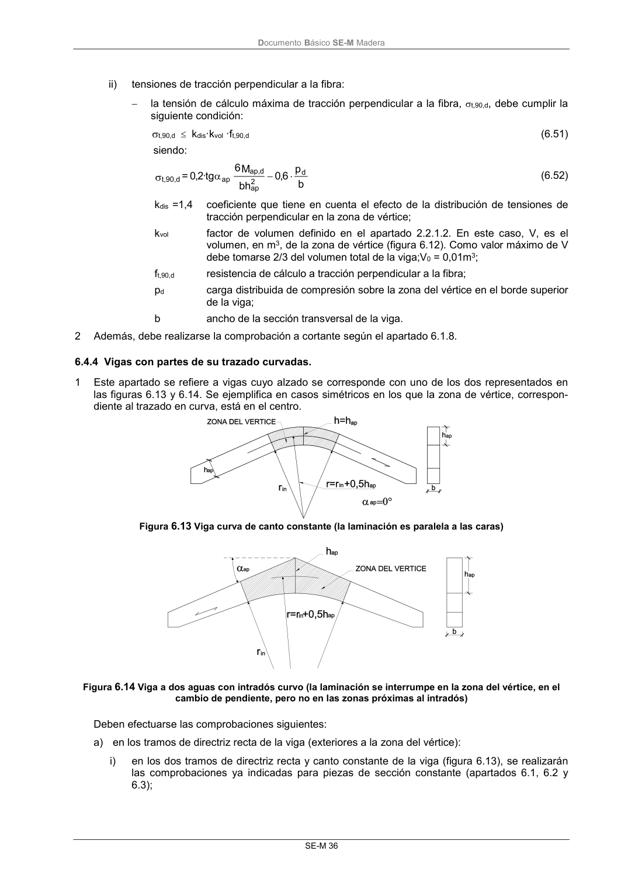

DB-SE-M · 6.4.3 Viga a dos aguas o con cambio de pendiente en una de las caras · versión 2019-12-20 · capa oficial
Formatos: JSON compacto · Markdown · PDF fuente
Ámbito del documento · texto del ámbito · documento y tablas
ID técnico a0089 · PDF pág. 41-42 · jerarquía no validada por persona · contrastado con el literal de la página 41 (candidato tipográfico); no validado por persona · padre: a0086
6.4.3 Viga a dos aguas o con cambio de pendiente en una de las caras 1 Las comprobaciones que se indican a continuación son aplicables únicamente a piezas de madera laminada encolada o de madera microlaminada. Se define la zona de vértice, según la figura 6.12, como una zona localizada en el cambio de pendiente, siendo el semivano el resto. Se comprobará: a) en los semivanos. En los dos tramos de viga con canto variable (figura 6.12), se realizarán las comprobaciones indicadas en el apartado 6.4.2; Figura 6.12. Viga a dos aguas b) en la zona del vértice (zona rayada de la figura 6.12. El rayado se hace sólo para indicar la zo- na, ya que el laminado se supone paralelo a la cara inferior con pendiente constante): i) tensiones normales debidas a la flexión en la zona del vértice: en la zona del vértice, la tensión de cálculo a flexión, m,d, debe cumplir la siguiente con- dición: f d m, d m, (6.48) siendo: fm,d resistencia de cálculo a flexión. la tensión de flexión en la sección central de la zona de vértice, m,d, puede obtenerse a partir de la siguiente ecuación (la clásica fórmula de resistencia de materiales modificada por el coeficiente kl): h b M 6 k = 2 ap d ap, l d m, (6.49) siendo: kl = 1 + 1,4 tg ap + 5,4 tg2ap (6.50) Map,d momento flector máximo de cálculo en la sección del vértice; b anchura de la sección; hap altura de sección en el vértice de la viga (figura 6.12); ap ángulo del faldón (figura 6.12). DocumentoBásico SE-M Madera SE-M 36 ii) tensiones de tracción perpendicular a la fibra: la tensión de cálculo máxima de tracción perpendicular a la fibra, t,90,d, debe cumplir la siguiente condición: t,90,d kdis·kvol ·ft,90,d (6.51) siendo: b p 6,0 bh M 6 tg · 2,0 = d 2 ap d ap, ap d t,90, (6.52) kdis =1,4 coeficiente que tiene en cuenta el efecto de la distribución de tensiones de tracción perpendicular en la zona de vértice; kvol factor de volumen definido en el apartado 2.2.1.2. En este caso, V, es el volumen, en m3, de la zona de vértice (figura 6.12). Como valor máximo de V debe tomarse 2/3 del volumen total de la viga;V0 = 0,01m3; ft,90,d resistencia de cálculo a tracción perpendicular a la fibra; pd carga distribuida de compresión sobre la zona del vértice en el borde superior de la viga; b ancho de la sección transversal de la viga. 2 Además, debe realizarse la comprobación a cortante según el apartado 6.1.8.

PDF fuente redistribuible: copia fiel enlazada en esta página (SHA256 verificado).